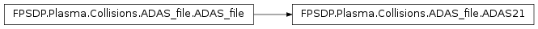
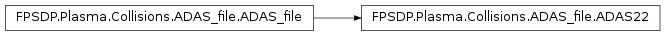

ADAS Readers
This file contains the different kind of readers for the ADAS database.
An abstract class (ADAS_file) is defined for the inheritance and define how to read a block of data.
ADAS_file
-
class FPSDP.Plasma.Collisions.ADAS_file.ADAS_file(name)[source]
Parent class for defining the different kind of database readers.
This class is for inheritence purpose only. It will be inherited
by all the ADAS readers.
It defines how to read a block
of data (read_block) [often used in 2D data of the ADAS database].
The beam energy is divided by the atomic mass of the beam particles (eV/amu).
| Parameters: | name (str) – Name of the ADAS file |
|---|
| Variables: | self.name (str) – Name of the ADAS file |
|---|
-
read_block(data, i, array, n)[source]
Read one bloc in an ADAS file
The coefficient depending on two coefficients are written in a block form,
thus this function read the block at the line i and return the
number of the final line
| Parameters: |
- data (list[str]) – file currently readed (each index is for a line)
- i (int) – first line to look at (index of data)
- array (np.array) – array where to add the data from the file (should be of the good size)
- n (int) – Number of item contained inside the data
|
|---|
| Returns: | index of the index of the final line
|
|---|
| Return type: | int
|
|---|
ADAS21 reader

-
class FPSDP.Plasma.Collisions.ADAS_file.ADAS21(name)[source]
Class containing all the data from one ADAS file (adf21)
The data contained in this kind of file is the beam stopping coefficient.
The beam energy is divided by the atomic mass of the beam particles (eV/amu).
| Parameters: | name (str) – Name of the ADAS file
|
|---|
| Variables: |
- n_b (int) – Size of the beam energy dimension
- n_density (int) – Size of the density dimension
- T_ref (float) – Reference temperature (eV)
- adas_beam (np.array[n_b]) – Beam energies considered (eV/amu)
- densities (np.array[n_density]) – Densities considered (m -3)
- coef_dens (np.array[n_density,n_b]) – Beam stopping coefficient as a function of the density and the beam energy (m 3/s)
- n_T (int) – Size of the temperature dimension
- E_ref (float) – Reference beam energy (eV/amu)
- dens_ref (float) – Reference density (m -3)
- temperature (np.array[n_T]) – Temperatures considered (eV)
- coef_T (np.array[n_T]) – Beam stopping coefficient as a function of the temperature (m 3/s)
|
|---|
ADAS22 reader

-
class FPSDP.Plasma.Collisions.ADAS_file.ADAS22(name)[source]
Class containing all the data from one ADAS file (adf22)
The data contained in this kind of file is the emission coefficient.
The beam energy is divided by the atomic mass of the beam particles (eV/amu).
| Parameters: | name (str) – Name of the ADAS file
|
|---|
| Variables: |
- n_b (int) – Size of the beam energy dimension
- n_density (int) – Size of the density dimension
- T_ref (float) – Reference temperature (eV)
- adas_beam (np.array[n_b]) – Beam energies considered (eV/amu)
- densities (np.array[n_density]) – Densities considered (m -3)
- coef_dens (np.array[n_density,n_b]) – Emission coefficient as a function of the density and the beam energy (m 3/s)
- n_T (int) – Size of the temperature dimension
- E_ref (float) – Reference beam energy (eV/amu)
- dens_ref (float) – Reference density (m -3)
- temperature (np.array[n_T]) – Temperatures considered (eV)
- coef_T (np.array[n_T]) – Emission coefficient as a function of the temperature (m 3/s)
|
|---|